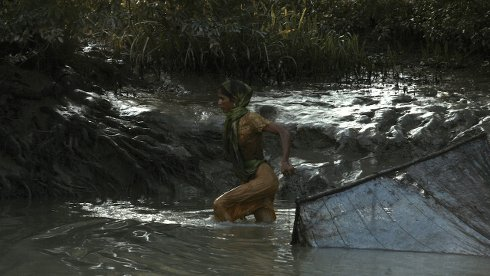

Ligne noire
Black Line

Mark Olexa, Francesca Scalisi
|
Switzerland 2017 Grand Prix Saguenay 2018 R+P: Mark Olexa, Francesca Scalisi – K: Mark Olexa – S: Francesca Scalisi – SD: Florian Pittet – V: Dok Mobile
|
Tuesday 16 oct 8.30 pm werkstattkino
A woman fishing in turbid waters, a suffering nature, the broken chant of the muezzin, all linked by a thin, black line.
Mark Olexa, Francesca Scalisi Italian director and editor Francesca Scalisi (1982) and Swiss director and producer Mark Olexa (1984) are based in Fribourg, Switzerland, where they run the film production company Dok Mobiel.
|
| Films Mark Olexa Heart-Quake 2010 – Stratagema 2014 – Moriom 2015 – Half-life in Fukushima 2016 – Ligne Noire 2017 Films Francesca Scalisi Gente dei bagni - Bath people 2015 – Moriom 2015 – Half-life in Fukushima 2016 – Ligne Noire 2017
|